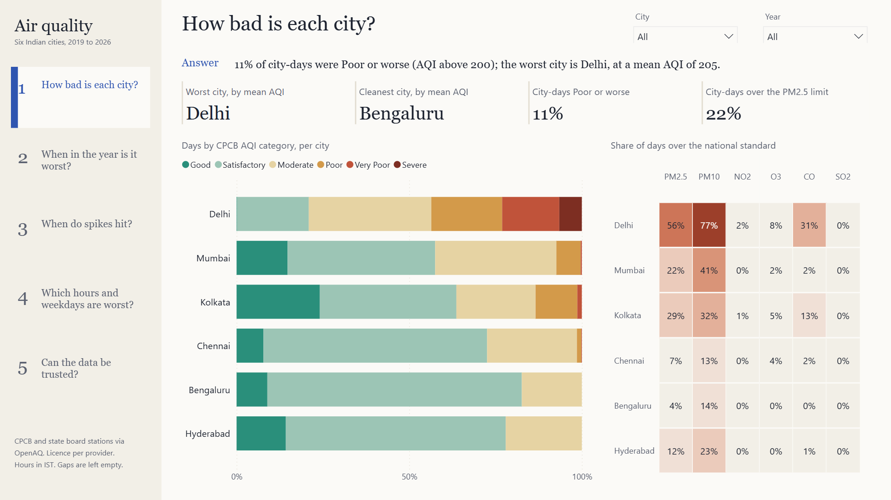
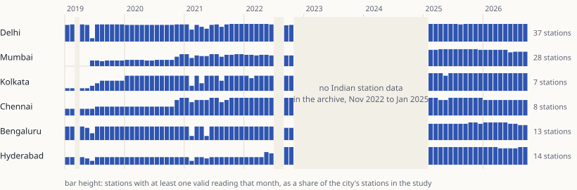
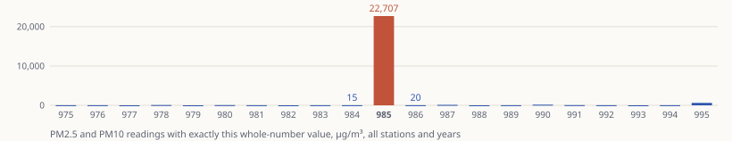
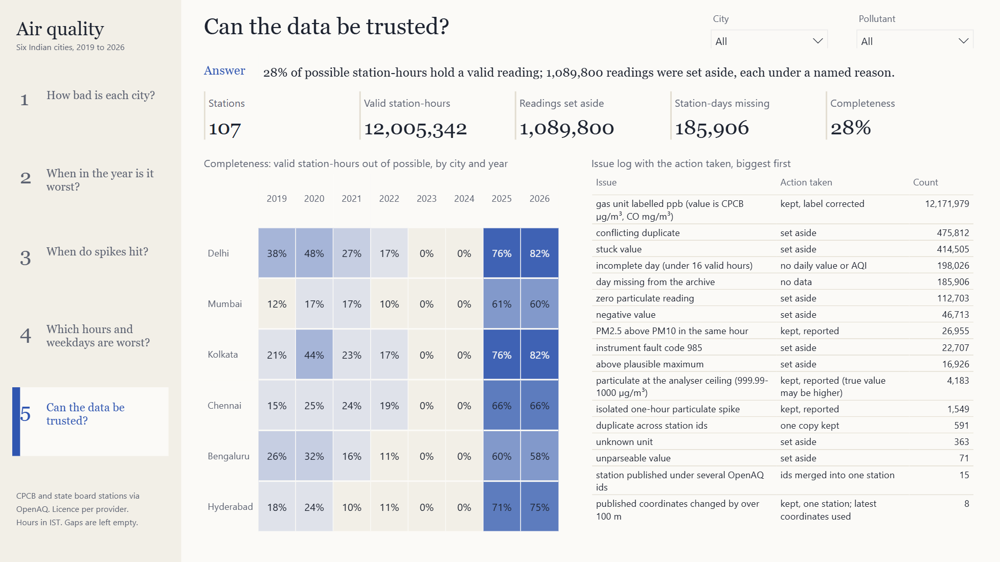
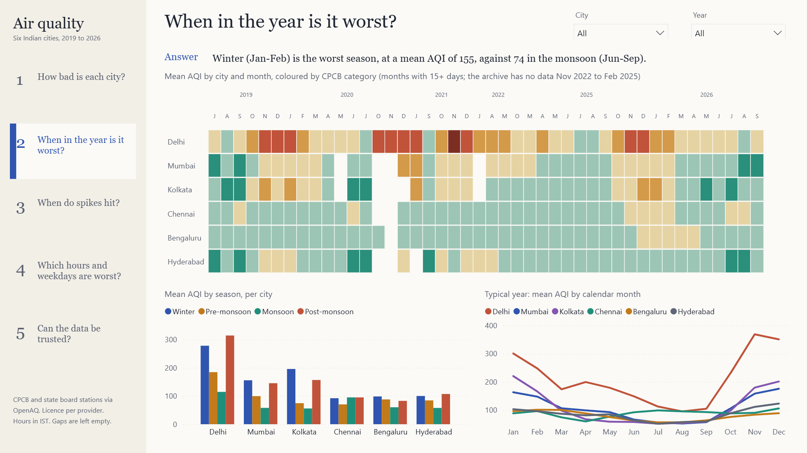
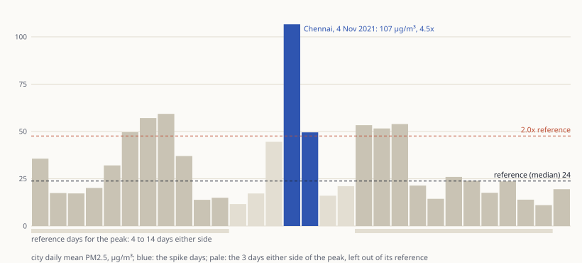
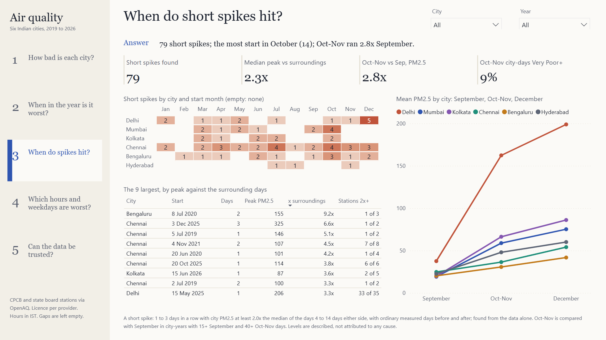
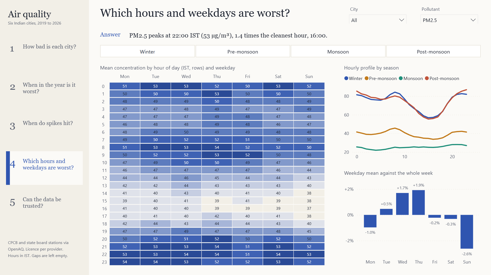

How bad is the air, and can the data be trusted?
The first piece in this series built on real measurements rather than a simulation: government monitoring stations in Delhi, Mumbai, Kolkata, Chennai, Bengaluru and Hyderabad, from the public OpenAQ archive. There is no answer key this time. There is an archive with a 27-month hole, mislabelled units, a fault code posing as a concentration, frozen sensors and duplicate feeds, each found, counted and handled. Nothing is filled in.

Why real data
The earlier pieces in this series simulated their data and graded the analytics against a sealed answer key: that proves the method, not the world. Here nothing is planted, so every number has to survive the source.
The data
| Source | OpenAQ data archive on AWS Open Data, read anonymously over HTTPS: no account, no API key |
|---|---|
| Underlying data | Continuous monitoring stations of CPCB, state boards, IMD and IITM, published on CPCB's portal |
| Window | Hourly, on IST, 2019-01-01 to 2026-09-30; valid data from 2019-01-02 17:00 to 2026-09-30 23:00 |
| Stations | 107 stations (122 OpenAQ ids): Delhi 37, Mumbai 28, Hyderabad 14, Bengaluru 13, Chennai 8, Kolkata 7 |
| Download | 117,993 daily files, 337.4 MB, every file checked against the archive's MD5 and listed with its SHA-256 in a manifest |
| Rows | 56,030,781 raw rows; 37,165,817 readings of the AQI pollutants (PM2.5, PM10, NO2, SO2, O3, CO); 36,075,426 valid; 12,005,342 station-hours; 7,083 city-days with an AQI |
| Attribution | CPCB and state boards, via OpenAQ; credit both. The licence is set by each provider |
The archive has no station list and OpenAQ's API needs a key, so the stations were found from the archive itself: all 55,965 location ids were listed and the first row of one file per id read with a 2 KB range request. 1,494 fall inside India's bounding box; 170 are government monitors in the six cities, grouped into stations by city, site and agency, each needing 365+ days of files. The download budget is 350 MB.
What real data costs
| Problem | What the data showed | What was done |
|---|---|---|
| The archive gap | No Indian station data from 31 Oct 2022 to 19 Feb 2025; 2022 has no July or August data; 185,906 station-days missing in all | Left empty and shown empty. No trend is claimed across the gap |
| Growing station sets | 9 of 28 Mumbai and 3 of 13 Bengaluru stations start in 2025, as does 1 of 7 in Kolkata; 8 of 14 in Hyderabad start in 2022 | City averages across years are marked as not like-for-like; station-level tables allow fixed-set comparisons |
| Mislabelled units | Later files label NO2, SO2 and CO as "ppb". CO "ppb" has a median of 0.66, where CO labelled µg/m³ has 710 (0.71 mg/m³); NO2 "ppb" has a median of 17.4, against 17.6 µg/m³ at the same stations earlier | The values are CPCB's own units under a wrong label: 12,171,979 readings at 106 stations relabelled, not converted. A check retests the evidence on every build |
| Fault code 985 | Exactly 985 appears 22,707 times in PM readings, against 15 for 984 and 20 for 986, at 21 stations | Set aside as a status code, not a concentration |
| Frozen values | 5,890 runs of an identical value for 8 or more consecutive hours; the longest is 446 hours of NO2 at IDA Pashamylaram (Hyderabad) | 414,505 readings set aside |
| Duplicate feeds | At 2 stations an old and a new OpenAQ id both publish from February 2025. Pusa (Delhi): the same value at 31 of 18,368 shared timestamps, correlation 0.76; Worli (Mumbai): the same value at 3 of 29,630 shared timestamps, correlation 0.19 | Two different instruments, not one feed twice: 475,812 conflicting readings set aside, with no basis to choose. Identical copies keep one |
| Moving coordinates | 8 stations change their published coordinates by over 100 m; the largest shift is 363 km, a geocoding error | Kept as one station, latest coordinates used, counted |


Every reading gets one disposition
Each reading of the six AQI pollutants receives exactly one disposition, valid or a named issue, and only valid readings reach the facts. 17 kinds of issue are logged across readings, hours, days and stations, each with its action and count (the report's trust page, below). 8 of them set readings aside, 1,089,800 in all. The rest keep the reading and count it: 4,183 particulate readings sit at the analyser's ceiling of 1000 µg/m³, where the true value may be higher, and 198,026 station-days have fewer than 16 valid hours and get no daily value or AQI.
The pipeline
Discovery and download are separate, resumable scripts; the download refuses a plan above its budget and writes a manifest with every file's URL, size, MD5 and SHA-256. Staging types every reading, converts timestamps to IST (readings are period-ending: a 17:00 stamp belongs to the 16:00 hour), applies the unit rules and gives each reading its one disposition. The model layer builds the dimensions and hourly and daily facts; a day needs 16 valid hours. The marts score CPCB's National AQI (24-hour means for particulates, NO2 and SO2, the highest 8-hour mean for O3 and CO; three pollutants including PM2.5 or PM10 for a station AQI; the city AQI as the mean of its stations), then months, seasons, exceedance of the national standards, spikes, hourly profiles and completeness.
The export to Excel and Power BI is blocked if any check fails. The workbook (12 sheets, 9 Excel Tables, month by city matrices coloured by AQI category) and the Power BI project are both generated from the same warehouse. A full build from the raw files took about 26 minutes.
Proving it
- 23 of 23 reconciliation checks pass on every build: every raw row staged once, one disposition per reading, hourly and daily values recomputed from their readings, no hour or day invented, AQI sub-indices against an independent implementation of CPCB's breakpoints, city and month figures recounted, spike episodes rebuilt, data-quality counts reconciled and the unit evidence retested.
- Mutation test, 23 of 23 caught. A copy of the warehouse is broken once per check (a duplicated reading, an invented hour, a wrong sub-index, a spike run cut short...). Each break must fail its check, or the check is not proving anything.
- 423 of 423 report numbers match. The report is opened in its own Power BI window; 56 of 56 measures evaluate without error, and every figure on the 5 pages (cards, answer sentences rebuilt word for word, heatmap cells, the spike table, the issue log) is compared with independent SQL.
- Nothing clipped. 305 of 305 single lines and 36 of 36 wrapped texts are measured with the report's real fonts against their boxes, under every slicer combination; 14 of 14 grids fit without scrollbars.
- Byte-identical rebuilds. Two builds from the raw files give the same 18 of 18 output files (every exported table and the workbook); a regenerated Power BI project matches the committed files.
The report
Five pages, generated as a Power BI project (a TMDL model of 14 tables, 20 relationships and 56 measures, and a PBIR report) by powerbi/build_pbip.py. The layout is a question rail: one plain question per page down the left, and each page opens with its one-sentence answer, computed by a measure, before any chart. Colours follow CPCB's AQI categories; nothing in a sentence on the report is typed by hand.


Short spikes, found from the data alone
There is no event calendar, no labels and no cause: a spike is defined only by how a day compares with the days around it.

For each city-day, the reference is the median city PM2.5 of the days 4 to 14 days before and after it. The 3 days either side are left out, so an episode of up to 3 days never sets its own reference, and a day is evaluated only when 6 of the 11 reference days are measured on each side. A spike day is at least 2.0x its reference: 144 of 5,724 evaluated city-days (2.5%). A short spike is a run of 1 to 3 such days with measured ordinary days on both sides.
79 episodes: Chennai 28, Delhi 14, Bengaluru 13, Mumbai 12, Kolkata 9, Hyderabad 3. Per 100 evaluated city-days they start most often in October (3.5; 14 of 405 days) and least often in February (0.3). A city value is a mean of stations, so each episode records how many stations carried it: in 22 episodes a single station of several carries the peak day, and 2 rest on a day with only one station reporting. They are shown as such, not hidden. Not counted: 3 runs longer than 3 days and 18 runs next to a day without a reading or reference, where the length cannot be known.


What the data says
Limits and next steps
- The 27-month gap splits the record in two. Nothing can be said about how the air changed between 31 Oct 2022 and 19 Feb 2025.
- Station sets grow, so city averages across years are not like-for-like. A fixed panel of stations present in every year would be the honest way to compare years.
- There is no weather or emissions data, so the analysis describes levels and timing, never causes. Joining IMD weather would be the next step towards explaining them.
- CPCB's open-ended Severe band is closed at its lower bound plus the width of the band below; NH3 and lead are not in the archive. Power BI has no free public link, so the report ships as a project with these images.